2. gyakorlat¶
Mi is az a JavaFX?¶
- Java GUI-s alkalmazásokhoz egy ideális választás
- Tekinthető a Swing leszármazottjának
- GUI építés kétféle módon:
- Java kód írásával
- FXML leíró segítségével (XML alapú)
A JavaFX komponensei¶
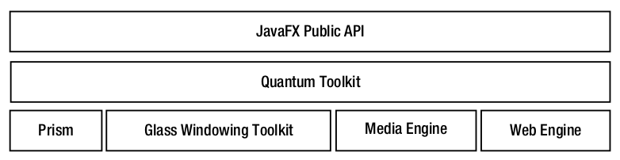
A GUI felépítéséhez egy úgynevezett Scene Graph hozunk létre. Ez a gráf vizuális elemeket tartalmaz, amiket Node-oknak nevezünk (javafx.scene.Node).
Ezeket a Node-okat a Scene Graph hierarchikus elrendezésben tárolja.
Fontos, hogy ez a hierarchia egy fát alkot, azaz nincs benne kör.
Ez azért tilos, mert például ha két tároló egymást tárolná direkt vagy indirekt az értelmetlen lenne.
Továbbá a gráfhoz minden elemet csak egyszer adhatunk hozzá.
A Scene Graph-ot a publikus JavaFX API segítségével tudjuk felépíteni.
Egy node lehet például egy egyszerű UI vezérlő, például egy gomb.
Egy példa Scene Graph az alább látható:
| Scene Graph példa (Forrás: FxDocs) |
|---|
| 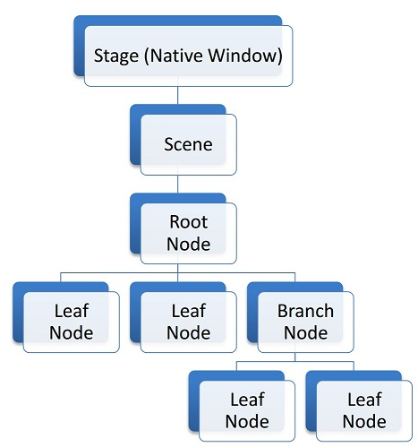 |
A hierarchia legfelsőbb pontján a Stage áll, mely egy natív ablakot reprezentál.
A Stage egyszerre csak egy Scene-t tartalmazhat, mely a Scene Graph tárolója.
A belső úgynevezett Branch Node-oknak lehetnek gyerekei, így ezek a node-ok Parent típusúak.
Ennek a reprezentációnak az előnye, hogy tetszőleges transzformációt egy belső node-ra alkalmazva, annak gyerekeire is érvényesek lesznek azok.
Például, ha eltolunk egy elemet, aminek vannak gyerekei is, akkor azok is el lesznek tolva a megadott transzformáció alapján.
A Prism egy hardver-gyorsított grafikus csővezeték, ami rendereli a Scene Graph-ot.
A Glass Windowing Toolkit az operációs rendszertől függően natív módon ablakozási feladatokat lát el. Ezen felül ez a komponens felelős az eseménykezelő sorok (event queue) kezeléséért. JavaFX-ben az események a fő threadben kerülnek kezelésre, amely JavaFX-ben az úgynevezett Application Thread. Fontos, hogy a Scene Graph-ot csak ezen a fő szálon keresztül módosíthatjuk.
A Media Engine meglepő módon a média lejátszásához ad segítséget. Audio és Videó lejátszási lehetőségeket biztosít a felhasználó számára.
JavaFX-es alkalmazásainkban webes tartalmat is megjeleníthetünk, melynek felelőse a web engine (WebKit alapú).
A Quantum toolkit a 4 alacsony szint felett egy absztrakciós szint, illetve a 4 alacsony szint közötti koordinációért is ő a felelős.

Hello World JavaFX-ben¶
A következőkben megnézzük, hogy hogyan kell beállítani a projektünket, hogy képesek legyünk JavaFX alkalmazásokat írni. A projektek buildeléséhez Maven-t fogunk használni, így erre fókuszálunk.
JavaFX + Maven¶
Feladat
Csináljunk egy teszt projektet az IDE-ben Maven használatával! JavaFX alkalmazáshoz kövessük a hivatalos leírást!
Megoldás
A projekt létrehozását és konfigurációját az alábbi videó mutatja be:

JavaFX SDK¶
Feladat
Próbáljuk ki a projekt létrehozását a JavaFX SDK használatával is!
Megoldás
A projekt létrehozását és konfigurációját az alábbi videó mutatja be:

A generált projekt felépítése¶
Bármelyik fenti megoldást is választjuk a projektünk létrehozásához, azokban lesznek olyan alkotóelemek, melyek minden JavaFX alkalmazásban megtalálhatóak. Ezeket az elemeket a következő videó mutatja be, illetve lesz róluk szó a következő szekciókban is.

Csontváz¶
Minden JavaFX alkalmazásnak az Application osztályból kell származnia, ami a javafx.application csomagban található. Tehát minden alkalmazás fő osztálya valahogy így néz ki:
1 2 3 4 5 6 | |
Ez a kód ilyen formában még nem lesz futtatható. Az Application osztály egy absztrakt osztály, melynek van egy start(Stage stage) absztrakt metódusa. Az Application osztályban a következő módon van deklarálva a metódus:
1 | |
1 2 3 4 5 6 7 8 9 10 11 | |
Stage-et kap ez a metódus. Ez lesz az úgynevezett primary stage. A stage-re tekintsünk úgy, mint egy komplett ablakra (címsor, minimize, maximize, bezárás gombokkal együtt, és maga az ablak tartalma). Az ablak tartalma egy scene lesz, amit majd kicsit később hozzá is fogunk adni. A primary stage mindig létrejön, de ezen felül majd mi magunk is hozhatunk létre további stage-eket (ablakokat).
A fenti alkalmazást már le tudjuk fordítani, de történni nem fog semmi. Nézzük meg mi kell ahhoz, hogy valami láthatót is csináljunk.
Tehát a primary stage-ünk tekinthető egy scene tárolójának. A JavaFX által létrehozott primary stage-nek alapból nincs megadva scene-je, azaz üres ez a konténer (az ablakon belül nincs semmi tartalom). Később készítünk egy saját scene-t amit megadunk majd a primary stage-nek.
Egyelőre állítsuk be a primary stage címsorát, hogy mutassa a 'Hello JavaFX' szöveget. Ahhoz, hogy a stage-et kirajzolja (renderelje a rendszer) meg kell hívnunk a show() metódusát.
1 2 3 4 5 6 7 8 9 10 11 12 13 | |
A fenti kód teljesen jól működik, ám a szemfülesek észrevehetik, hogy nincsen main metódusunk.
JavaFX alkalmazás esetében nem is kell, hogy legyen main metódusunk.
Ha ez valamiért mégis szükséges számunkra (például a parancssori argumentumok miatt) akkor módosítsuk a programunkat a következőképpen.
1 2 3 4 5 6 7 8 9 10 11 12 13 14 15 16 17 | |
Az Application statikus launch metódusa csinál néhány munkálatot a háttérben, majd meghívja a start metódust.
Ilyen módon jóformán becsomagoltuk a JavaFX alkalmazásunkat.
Fontos
Néhány IDE esetén problémát okozhat a main nélküli osztály, így mi mindig használni fogjuk.
Tipp
A launch metódus nem tér addig vissza, ameddig minden ablakot be nem zárunk, vagy meg nem hívjuk a Platform.exit() metódust.
Scene hozzáadása¶
Ahogy azt említettük korábban a primary stage-ünk tartalmazhat egy Scene-t, ami pedig a grafikai elemeket tartalmazza egy fa-struktúrában. Ennek a fa hierarchiának a legfelső pontja az úgynevezett root node. Egy Scene-nek rendelkeznie kell egy root node-al. A következő példában VBox-ot használunk majd root-ként, amely egy vertikális tároló.
Tipp
Bármelyik elem ami a javafx.scene.Parent osztályból származik használható root node-ként. Tipikusan a tárolók és elrendezés panelek ilyen elemek. Például: VBox, HBox, Pane, GridPane, TilePane, FlowPane.
Íme egy példa, amiben már scene-t is adunk a stage-hez:
1 2 3 4 5 6 7 8 9 10 11 12 13 14 15 16 17 18 19 20 21 22 23 24 25 26 27 | |
Vegyük sorra az új kódot. Ahhoz, hogy a scene root node-ját be tudjuk állítani létrehozunk egy VBox objektumot, amely egy vertikális elrendezést biztosító tároló. Ez azt jelenti, hogy a VBox-hoz hozzáadott gyermek node-ok egymás alatt fognak megjelenni.
1 | |
Ehhez a tárolóhoz most egyetlen gyereket adunk hozzá, mégpedig egy Text típusú objektumot.
1 | |
Ez egy egyszerű szöveges tartalmat definiál JavaFX-ben. A Text osztály azon konstruktorát használtuk, melynek egy String-et adhatunk meg. Ezután ténylegesen hozzá is adjuk a létrehozott Text objektumot a tárolóhoz:
1 | |
getChildren() metódussal lekérhető az adott tároló összes gyereke, ami egy ObservableList<Node> objektumot ad vissza, azaz a gyerekeket egy listában érhetjük el. A fenti példában egyszerűen ehhez a listához adjuk hozzá az új elemet, azaz a Text típusú msg objektumot.
Tipp
Minden Parent-ből származó elemnek van getChildren() metódusa, mivel a Parent-nek lehetnek gyerekei...
Az ObservableList egy olyan lista interface, mely biztosítja azt, hogy a lista változásakor a feliratkozók értesítést kapjanak. Ez azért fontos, mert ha futás közben dinamikusan változtatjuk egy Parent gyerekeit (pl. hozzáadunk egy új gyereket), akkor valószínűleg újra ki kell rajzolnia a rendszernek.
Miután elkészítettük a root node-unkat és adtunk hozzá tartalmat, létrehozzuk a scene-t:
1 | |
A Scene több konstruktorral is rendelkezik, de a root node-ot meg kell adnunk mindenképpen (ami Parent típusú kell legyen). A példában megadjuk a scene méretét is (szélesség és magasság).
Ezután a primary stage-nek meg kell mondanunk, hogy az imént létrehozott scene-t használja, így a következő utasítást is megadjuk:
1 | |
Feladat
Változtassuk meg az ablak "stílusát" a void initStyle(StageStyle style) metódus segítségével, melyet még a show() előtt hívjunk meg! A használható értékek:
- StageStyle.DECORATED
- StageStyle.UNDECORATED
- StageStyle.TRANSPARENT
- StageStyle.UNIFIED
- StageStyle.UTILITY
Feladat
Tiltsuk le a fő ablakunk átméretezését a setResizable() metódus használatával!
Feladat
Állítsuk be az ablakunk minimális, illetve maximális szélességét és magasságát a következők használatával:
setMinWidth()setMinHeight()setMaxWidth()setMaxHeight()
Feladat
Amikor megjelenítjük a fő ablakunkat, akkor az "maximized" állapottal rendelkezzen!
Használjuk a setMaximized() metódust, majd vessük össze a setFullScreen() metódussal!
A Hello JavaFX bővítése¶
Még nagyon keveset láttunk a JavaFX-ből. A következő lépés, hogy hozzáadunk egy gombot, amit ha megnyom a felhasználó, akkor az alkalmazás kilép.
Amikor a felhasználó megnyomja a gombot, akkor egy ActionEvent esemény keletkezik. Amennyiben kezelni szeretnénk a keletkező ActionEvent-et, akkor hozzá kell adnunk egy ActionEvent handler-t (kezelőt), mert a gomb setOnAction metódusa ezt várja, egészen pontosan egy EventHandler<ActionEvent> paramétert. A saját eseménykezelőhöz ezért a EventHandler<ActionEvent> interfészből kell származtatni egy saját osztályt, és a void handle(ActionEvent e) metódust kell megvalósítani, ami az esemény bekövetkeztekor fog meghívódni.
Erre egy példa a következő:
1 2 3 4 5 6 | |
És a használata:
1 2 | |
Mivel a különböző eseményekhez különböző eseménykezelőt használunk, és általában egy eseménykezelő osztályt csak egy helyen használunk, ezért ,,felesleges'' az osztályt létrehozni, ezt megvalósíthatjuk anonymous osztállyal is.
1 2 3 4 5 6 7 8 9 | |
Tovább egyszerűsítve a dolgot használhatunk lambda kifejezést is.
1 2 3 4 | |
A gomb használatát és az eseménykezelését az alábbi videó is bemutatja:

A gombon kívül létrehozhatunk egy TextField-et is, amely egy egyszerű szöveges beviteli mező. A TextField-hez hozzáadunk egy eseménykezelőt, mely figyeli a billentyű felengedéseket és a korábban létrehozott Text típusú msg szövegét változtatja meg.
1 2 3 4 5 6 | |
Az új részek után a teljes program valahogy így néz ki:
1 2 3 4 5 6 7 8 9 10 11 12 13 14 15 16 17 18 19 20 21 22 23 24 25 26 27 28 29 30 31 32 33 34 35 36 37 38 39 40 | |
Megjegyzés
Aki úgy érzi, hogy a lambdákkal nem bánik megfelelő szinten, az itt elsajátíthatja az alapokat.

Feladat
Amennyiben egy gombnyomásra lépünk ki az alkalmazásból, akkor a bezáráskor triggerelt eseménykezelőt átjátszhatja a felhasználó, ha az ablak jobb felső sarkában a kis "X"-re kattint.
Próbáljuk ki a Stage setOnCloseRequest() metódusát, mely képes kezelni a CloseRequest-eket.
Elegendő, ha egy egyszerű System.out.println()-t helyezünk el benne.
Egy JavaFX Application életciklusa¶
Két fő szál jön létre egy JavaFX alkalmazás futtatásakor (a launch() metódus hatására):
- JavaFX Launcher
- JavaFX Application Thread
A JavaFX Runtime az Application osztály következő metódusait hívja meg annak életciklusa folyamán (sorrendben):
- Paraméter nélküli konstruktor (Ilyennek lennie kell)
init()start()stop()
A JavaFX Application Thread példányosít egy objektumot az Application leszármazottjából a launch() hívás hatására.
Ezután meghívódik az init() metódus, ami az Application osztályban egy üres metódus, de kedvünkre felüldefiniálhatjuk a fő osztályunkban.
Stage és Scene létrehozása az init-en belül nem lehetséges.
Ezután meghívódik a start() metódus és a launch metódus a futás befejezésére vár.
Amikor a futását befejezte az app, akkor meghívódik a stop() metódus, ami ugyanúgy egy üres metódus az Application osztályban, de felüldefiniálhatjuk.
A fentiek közül az init a Launcher Thread által hívott, a többi az App Thread által.

JavaFX alkalmazások debuggolása¶
A debug egy kicsit trükkös így, hogy Maven-t használunk a futtatáshoz.
A következőt kell a pom.xml-ben elhelyeznünk a javafx-maven-compiler plugin alá:
1 2 3 4 5 6 7 8 9 10 11 12 13 14 15 16 17 18 19 20 21 22 23 24 25 | |
Ezzel két futtatási konfigurációt csinálunk, melyek közül a sima run nem változik semmit sem, viszont létrehozunk egy debug futtatási környezetet is, ahol az opciók segítségével egy olyan JVM-et indítunk, amihez "távolról" csatlakozhatunk.
Erre azért van szükség, mert a Maven-ből indított JavaFX alkalmazás egy külön JVM-en fog futni (nem az IntelliJ-t használjuk a futtatáshoz, amiben lenne beépített debugger is).
A JDWP (Java Debug Wire Protocol) pontosan ebben segít: agentlib:jdwp, egész pontosan a JVM és a debugger (mely ebben az esetben az IntelliJ-n belül van) közötti kapcsolatot teremti meg.
Az opciók között a 4000 a portot adja meg, amin csatlakozhatunk a JVM-hez.
Ezt nyilván szabadon állíthatjuk.
További olvasmányt itt találsz a JDWP-ről.
Miután a plugin-t megfelelően konfiguráltuk a debug futtatási módot a következőképpen kérhetjük a Maven-től:
1 | |
A parancs kiadása után az IntelliJ Run konzolján a következőt olvashatjuk:
1 | |
Attach Debugger gombot is megtaláljuk.
Nincs más dolgunk, mint rákattintani erre a gombra és máris debug módban látjuk az alkalmazásunkat az IDE-n belül (persze valahova rakjunk egy breakpoint-ot, hogy ezt lássuk is).
Nekem nem jelenik meg az Attach Debugger gomb ...
Amennyiben az Attach Debugger gombot nem látjuk, akkor próbálkozzunk meg a fenti menüsorban a Run -> Attach to Process...-el, ahol látnunk kell a 4000-es porton futó process-t.
Fontos, hogy ebben az esetben is fusson az alkalmazás a fenti mvn paranccsal.
A fentieket az alábbi videó foglalja össze:

Scene-ek menedzselése¶
Jelen fejezet megmutatja, hogy hogyan tudunk több Scene között váltani. Ez azért fontos, mert egy komplexebb alkalmazásban biztosan több Scene-t fogunk használni az egyes tartalmak megjelenítéséhez.
Például: Chat alkalmazás
- Partner választó ablak
- Beszélgetés a partnerrel
A következő példa megmutatja, hogy hogyan tudunk két egyszerű scene-t létrehozni és közöttük navigálni.
1 2 3 4 5 6 7 8 9 10 11 12 13 14 15 16 17 18 19 20 21 22 23 24 25 26 27 28 29 30 31 32 33 34 35 36 37 38 39 40 41 42 43 44 45 46 47 48 49 50 51 52 53 54 55 56 57 58 59 | |
A start() metódus elején eltároljuk egy adattagban a primaryStage-re a referenciát, hogy ezen metóduson kívül is elérhessük a fő ablakunkat. Ezután egyszerűen megkonstruáljuk a két Scene-t, amelyekre egy-egy Label (egyszerű szöveges UI elem), illetve egy-egy Button kerül. A gombokhoz hozzáadtunk egy-egy eseménykezelőt is, melyek rendre a másik Scene-t állítják be a mainWindow-nak, mint aktuális Scene.
Feladat (02_scene-manager)
Komplexebb alkalmazásoknál érdemes lehet készítenünk egy SceneManager osztályt, melynek segítségével végezzük el az összes scene váltást, vagyis scene-ek közötti navigálást.
Próbáljuk meg kiszervezni ezt a navigációt egy külön komponensbe!
Megoldás
A SceneManager osztály valahogy így nézhet ki:
1 2 3 4 5 6 7 8 9 10 11 12 13 14 15 16 17 18 19 20 21 22 23 24 25 26 27 28 29 30 31 32 33 34 | |
A használata pedig a következőképpen nézhet ki:
1 2 3 4 5 6 7 8 9 10 11 12 13 14 15 16 17 18 19 20 21 22 23 24 25 26 27 28 29 30 31 32 33 34 35 36 37 38 39 40 41 42 | |
Egyszerű GUI elemek¶
A továbbiakban a legegyszerűbb és leggyakrabban használt Node-okat nézzük meg közelebbről.
ComboBox¶
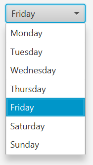
Lenyíló lista, melynek elemei közül választhat a felhasználó.
1 2 3 4 5 6 7 8 | |
Szerkeszthetővé is tehetjük:
1 | |
Az értékét pedig a .getValue()-val kérhetjük el.
1 | |
Megjegyzés
A ComboBox lévén egy generikus megvalósítás, bármilyen típusú objektumokat tartalmazhat.
Ilyen esetben a helyes megjelenés végett meg kell adnunk a CellFactory-t, vagy használhatunk egy StringConverter-t is.
Spinner¶
Hasonló a működési elve a ComboBox-hoz, valamilyen értékkészletből válaszhat a felhasználó. Alapvetően nem szerkeszthető, csak a nyilakkal lehet lépkedni az értékek között, de van lehetőség szerkeszthetővé tenni.
1 2 3 4 5 6 7 8 9 10 11 12 13 | |
1 2 | |
1 2 3 4 5 6 7 8 9 10 11 12 | |
Az értékét itt is a .getValue()-vel kérhetjük el.
1 | |
CheckBox¶
Egy egyszerű bepipálható vezérlő.
Használata:
1 2 3 4 5 6 7 | |
Értékének elkérése:
1 | |
RadioButton¶
Hasonló a CheckBox-hoz, group-ba pakolva az azonos group-on belüliekből csak egy választható ki egyszerre.
Ebben a példában mindkettőt be tudjuk jelölni egyszerre.
1 2 | |
Abban az esetben, ha egy groupba pakoljuk őket, akkor egyidejűleg csak az egyiket tudjuk kiválasztani.
1 2 3 4 5 6 7 8 | |
Egy rádió gomb státuszának lekérdezése a következőképpen lehetséges:
1 | |
Amennyiben azt szeretnénk megtudni, hogy mely gomb van kijelölve a csoporton belül, akkor a következőképpen járhatunk el:
1 2 | |
Elrendezések¶
JavaFX-ben a UI elemeknek rendre megmondhatjuk, hogy milyen pozícióban jelenjenek meg. Ennél egy jobb megoldás lehet, ha layout-okat használunk, mivel átméretezéskor a rendszer automatikus méretezi és pozícionálja a layout által tartalmazott UI elemeket is. A beépített elrendezések mind a javafx.scene.layout.Pane osztályból származnak (ezért nevük általában ...Pane-re végződik).
BorderPane¶
A BorderPane az alábbi képen látható elrendezést biztosít:
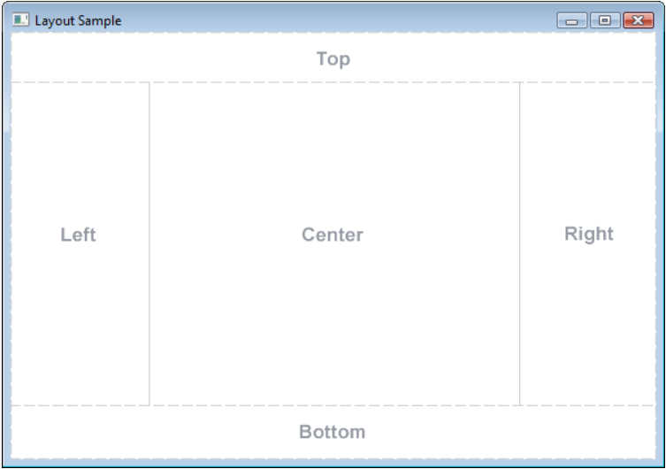
A BorderPane a legtöbb alkalmazásban előfordul, mivel remek lehetőséget biztosít a felsőbb szintű komponensek elrendezéséhez. Pl: Fenti toolbar, baloldali navigációs nézet, alulra valamilyen status bar kerülhet, középen a fő tartalom jeleníthető meg. A különböző régiókat akárhogyan méretezhetjük. Ha például nincs szükség a jobboldali részre, akkor annak mérete lehet 0 is. Ehhez egyszerűen nem kell definiálni azt a régiót, amire nincs szükség.
1 2 3 4 5 6 7 8 9 10 11 12 13 14 15 16 17 | |
HBox¶
A HBox egy egyszerű horizontális elrendezést tesz lehetővé, ahol az elemek egymás mellé kerülnek. A HBox-on belül az elemek közötti távolságot a Spacing-gel adhatjuk meg.
1 2 | |
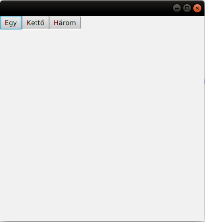
Ugyanez 10-es spacing-gel:
1 2 3 | |
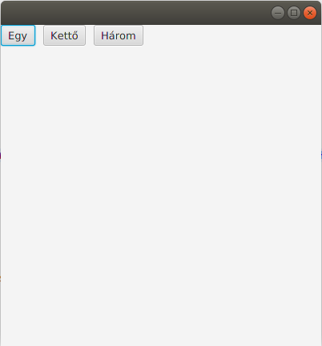
Ha padding-et is alkalmazunk rá:
1 | |
Tipp
A tárolók esetében az elrendezést adott esetben finomíthatjuk egy Region használatával.
Például azt szeretnénk, hogy egy gomb a HBox bal a másik pedig a jobb oldalán legyen, akkor a következőket is használhatjuk:
1 2 3 4 5 6 7 8 | |
A fenti esetben a spacer régió átméretezéstől függően növekszik (hgrow), így a két gomb a HBox két szélén fog elhelyezkedni.
VBox¶
A VBox egy egyszerű vertikális elrendezést tesz lehetővé, ahol az elemek egymás alá kerülnek. A VBox-on belül az elemek közötti távolságot a Spacing-el adhatjuk meg.
A példakód már spacing és padding alkalmazását is mutatja.
1 2 3 4 5 6 7 8 9 10 11 12 13 14 | |
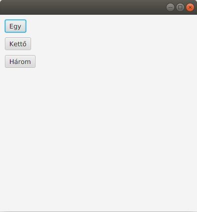
StackPane¶
A StackPane, ahogy neve is mutatja, egy stack-et használ. A hozzáadott elemek egy stack-be kerülnek és így egymáson jelennek meg. Jól használható akkor amikor például egy képre szeretnénk szöveget írni. Amennyiben megváltoztatjuk az elemek pozicionálását, akkor az az összes belerakott elemre hatással lesz.
Lássunk egy példát:
1 2 3 4 5 6 7 8 9 10 11 12 13 14 15 16 17 | |
Ennek az eredménye a következő:
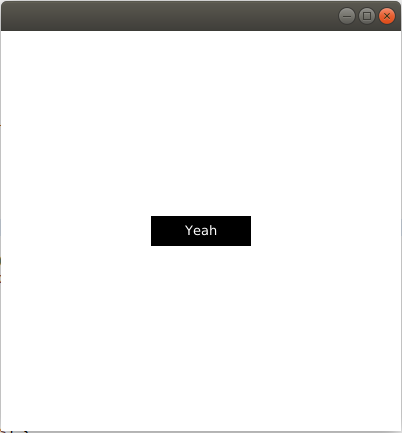
A példában a javafx.scene.shape.Rectangle osztályt használtuk egy téglalap létrehozásához. Az alap szín fekete, így ezt ezzel rajzolja ki a rendszer. Ezután létrehoztunk egy Text típusú objektumot, melynek a színét (setFill) fehérre állítottuk be.
Tipp
A StackPane alapértelmezetten középre igazítja a benne lévő elemeket.
GridPane¶
Rácsos elrendezést lehetővé tevő elrendezés manager. A cellatartalmak Node típust esznek meg. Az elrendezést kedvünkre alakíthatjuk a span-ek (sor vagy oszlop összevonások) használatával.
Tipp
Jól használható például formok létrehozásakor.
A cellák közötti helyet a HGap és VGap adja meg.
Egy egyszerű form összerakása valahogy így néz ki:
1 2 3 4 5 6 7 8 9 10 11 12 13 14 15 16 17 18 19 20 21 22 23 24 25 26 27 28 29 30 31 32 33 34 35 36 | |
Ennek az eredménye:
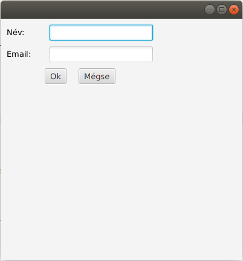
FlowPane¶
A FlowPane az elemek egymás után helyezi el. Alapértelmezetten horizontálisan rakja őket egymás után, ameddig a szélesség azt engedi, utána új sort kezd. Megadható, hogy sor- vagy oszlopfolytonosan dolgozzon (setOrientation()).
Lássunk egy példát:
1 2 3 4 5 6 7 8 9 10 11 12 13 14 15 16 17 18 | |
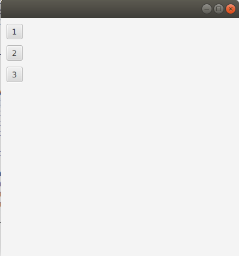
TilePane¶
A TilePane nagyon hasonló a FlowPane-hez, de egy rácsos elrendezést biztosít az egymás után bepakolt elemekre. Fontos, hogy a cellák mérete ugyanakkora lesz.
1 2 3 4 5 6 7 8 9 10 11 12 13 14 15 | |
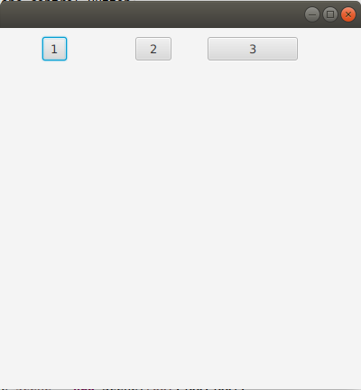
Amennyiben a példában kicseréljük a TilePane-t FlowPane-re, akkor az elemek közötti nagy 'rés' megszűnik, mert a FlowPane nem foglalkozik azzal hogy rácsos legyen az elrendezés, csak pakolja egymás után az elemeket.
AnchorPane¶
Az AnchorPane akkor jöhet jól, ha az ablak négy széléhez viszonyítva valamilyen elemeket fixen akarunk tartani. Például egy HBox-ban lévő gombokat alulra szeretnénk mindig rakni. Ez az átméretezéskor is megmarad. Ehhez az kell, hogy a HBox-ra egy horgonyt (anchor-t) állítsunk be.
Lássuk a példát:
1 2 3 4 5 6 7 8 9 10 11 12 13 | |
Fontos, hogy egy node-ra több anchor-t is alkalmazhatunk. Ha például a fenti példában a HBox-ot nem csak lentre szeretnénk horgonyoztatni, hanem jobb oldalra is akkor az AnchorPane.setRightAnchor(hb, 10) hívást is meg kell ejtenünk.
A fenti példa eredménye:
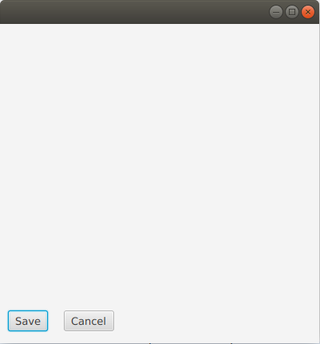
Menük¶
A menük, Menu, azok a szöveges elemek, melyekre az egeret rámozgatva lenyíló szövegeket találunk, melyek lehetnek további menük vagy akár konkrét funkcionalitást biztosító elemek, MenuItem.
A menüket gyakran az ablakok tetejére helyezzük el, de ez szabadon választható és a feljebb felsorolt tárolók bármelyikével hasznlhatók, akárcsak bármelyik másik Node.
Ahhoz, hogy a menük egymás mellett legyenek alkalmazhatunk egy menü sort, MenuBar.
Ez fogja tartalmazni az összes menüt egymás mellett.
1 2 3 4 5 | |
Eddig nem tartalmaznak elemeket a menük, csak megjelennek.
Ahhoz, hogy lenyíló tartalmuk legyen, további elemeket kell adni a menükhöz, pl MenuItem eeket.
1 2 3 4 5 6 | |
Ezzel az adott menükre kattintva előjönnek a megfelelő elemek, azonban eddig semmi sem történik, ha rákattintunk egy elemre. Ehhez meg kell adnunk, hogy mi történjen az adott elemre kattintáskor.
1 2 3 | |
Dailógus ablakok¶
Alert¶
A JDK 8u40-val a JavaFX-be bekerültek a dialógus ablakokat megvalósító API osztályok. Az egyik ilyen osztály az Alert.
Lássunk is egy példát:
1 2 3 4 5 6 | |
Az Alert többféle konstruktorral rendelkezik, de mindegyiknél megtalálható az AlertType paraméter, mellyel megadhatjuk, hogy milyen típusú dialógus ablakot szeretnénk létrehozni. A következő értékek adhatók meg:
AlertType.INFORMATIONAlertType.WARNINGAlertType.ERRORAlertType.CONFIRMATIONAlertType.NONE
Ezek maguktól értetődnek, de próbáljuk ki mindegyiket, hogy lássuk a különbségeket.
A NONE csak egy csupasz dialógus ablakot ad nekünk.
Egy Alert-nek 3 különböző szövegét állíthatjuk be, melyet a fenti példa is mutat. A dialógus ablaknak van egy címe, egy header-je (kb egy összegző szöveg), és egy részletesebb leírása (a contentText).
Ahogy azt korábban a Stage-nél láttuk, meg kell hívnunk a show() metódust, mivel addig a pontig nem látszik az ablak.
A dialógus ablakainkat általában modálisként szeretjük tálalni a felhasználó elé, tehát nem akarjuk, hogy a rendszerben bármi mást tudjon csinálni a felhasználó ameddig a dialógusablakról nem gondoskodott megfelelően. Ehhez a legegyszerűbb, ha a fent is használt showAndWait() metódust használjuk. Fontos, hogy a showAndWait() vissza is tér egy Optional<ButtonType> eredménnyel, amelyből megtudhatjuk, hogy a felhasználó melyik gombot nyomta meg, ami fontos lehet például egy CONFIRMATION típusú dialógusnál.
Nézzünk egy példát:
1 2 3 4 5 6 7 8 9 10 11 12 13 14 15 16 17 18 19 20 21 22 23 24 25 26 27 28 29 30 31 32 33 34 35 36 | |
A példából több mindent is tanulhatunk, egyrészt az Alert-nek van egy olyan konstruktora is, ami a következőképpen néz ki:
1 | |
Így egyszerűen megadhatjuk a contentText-et, illetve megadhatjuk, hogy milyen gombokat szeretnénk a dialógusra rakni. Jelen helyzetben egy Yes és egy No feliratú gombot helyezünk el. Amennyiben ezeket megadjuk, akkor az alapértelmezett (OK és Cancel) gombok nem lesznek rápakolva az ablakra.
A dialógus akkor jelenik meg, ha megpróbáljuk bezárni a fő ablakunkat. Ehhez az eseménykezelőt a setOnCloseRequest(...) metódus segítségével állíthatjuk be.
A showAndWait() visszatérését eltároljuk egy lokális változóban, majd megállapítjuk, hogy a NO gombot nyomta-e meg a felhasználó. Ha mégsem akar kilépni az alkalmazásból, akkor az eseményt elkapjuk és nem küldjük tovább (ezt teszi a consume() hívás). Ez azt jelenti, hogy a kilépési szándékunkat (az eseményt) nem továbbítjuk.
A fenti példában jól látható, hogy mi magunk választhatjuk ki, hogy milyen gombok jelenjenek meg a felületen. Ez rendben is van, de mi van akkor, ha magyar feliratú gombokat szeretnénk? A rendszer alapból angol feliratú gombokat biztosít. Szerencsére a JavaFX API erre is ad lehetőséget. Tekintsük a következő kódrészletet:
ButtonType buttonTypeNo = new ButtonType("Nem", ButtonData.NO);
Ilyen módon létrehozhatunk egy új gombtípust, melynek a felirata a 'Nem' szöveg, illetve viselkedését tekintve megegyezik a ButtonType.NO funkcionalitásával. Ezeket a viselkedéseket a ButtonData adja meg, mint azt a példa is mutatja. Érdemes lehet a dokumentációt megtekinteni az összes lehetséges variánsért.
További beállítási lehetőségként azt is megadhatjuk, hogy az ablak milyen elemekkel rendelkezzen. Ilyen például a stílusa.
dialog.initStyle(StageStyle.UTILITY);
Ebben az esetben az ablak csak a bezáró gombbal fog rendelkezni és minimize, maximize gombokkal nem.
Fontos lehet a szülőt beállítani:
dialog.initOwner(parentWindow);
Illetve megadhatjuk a modalitás típusát is:
dialog.initModality(Modality.APPLICATION_MODAL);
Ennek eredményeképpen az ablakunk a teljes alkalmazásra nézve lesz modális nem pedig csak a szülőre nézve.
További dialógus típusok¶
Az Alert-en kívül a JavaFX biztosít még néhány további beépített dialógust. Ezeket nem fogjuk részletesen megnézni. Használatuk nagyban hasonlít az Alert-hoz. Ezek a következőek:
TextInputDialog: egyszerű szöveges input is található a dialógusablakon, melynek tartalmát ashowAndWait()adja vissza eredményül.ChoiceDialog: Egy legördülő mezőt tartalmazó dialógus ablak. Amennyiben a felhasználó ad meg értéket, akkor az elkérhető ashowAndWait()visszatérési értékétől.Dialog: A lehető legáltalánosabb dialógus ablak, melynek minden részét egyedire szabhatunk ahogy csak akarunk.
Parancssori paraméterek használata (Opcionális)¶
A javafx.application.Application osztály biztosítja a megfelelő API hívásokat, hogy a paramétereket könnyen elérhessük.
Ehhez hívjuk meg a getParamters() metódust, amely egy Application.Parameters típussal tér vissza.
Ebből kihorgászhatóak a név nélküli és a nevesített paraméterek is.
Név nélküli lehet például: --help, és nevesített például a --inputDir="/home/valaki/input/" paraméter megadás.
A név nélküli paramétereket a getUnnamed() metódussal kérhetjük le, mely egy List<String>-et ad vissza az összes névtelen paraméterrel.
A névvel rendelkező paraméterek a getNamed() metódussal kapjuk meg, mely egy Map<String, String> objektummal tér vissza.
Mivel a parancssori parmétereket már nem módosíthatjuk, ezért ezek read-only objektumok, azaz final-ök.
Amennyiben nem szeretnénk kettéválasztani a paramétereket típus szerint (pl.: egy az egyben tovább akarjuk egy 3rd party libnek), akkor használhatjuk a List<String> getRaw() metódust.
Fontos lehet még, hogy a paraméterek elérése a konstruktorban még nem elérhető, viszont az init() metódusban már igen.
Példa¶
A JavaFX projektünkben csináljuk a következőket:
1 2 3 4 5 6 7 8 9 10 11 12 13 14 15 16 17 18 19 20 21 | |
A fenti kód megjeleníti a megadott paramétereket egy TextArea-ban. Ahhoz, hogy valami értelmeset is lássunk be kell állítanunk valamilyen command line paramétereket.
JavaFX SDK használata esetében ez a szokásos módon megtehető (Run Configurations), Maven-es projekt esetében a javafx-maven-plugin-t használva viszont a következőt kell megtennünk, ha például a --help --inputDir="/home/valaki/input/" parancssori argumentumokat kívánjuk használni:
1 2 3 4 5 6 7 8 9 | |
Futtatáskor a következő eredményt kapjuk:
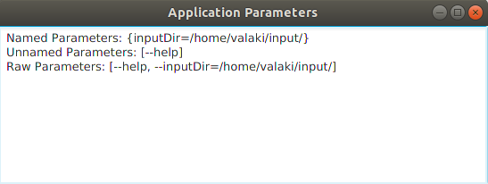
Figyelem
A javafx-maven-plugin esetében a paraméterek szétválasztása nem megfelelően működik, de a raw parameters mindig jól kerül átadásra.
Feladatok¶
Counter (04_hazi_counter)
Készítsük el a következőhöz hasonló felületet JavaFX-ben!
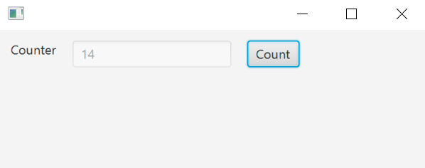
- A felület egy HBox-al dolgozik, melynek legyen valamekkora padding-je és az elemek között maradjon valamennyi hely.
- A felületen egy label, egy TextField és egy gomb legyen megtalálható.
- A TextField értékét a felületen ne írhassa be a felhasználó manuálisan, annak kezdőértéke legyen 0.
- A count gomb megnyomásakor a TextField értékét olvassuk ki és növeljük eggyel
Megoldás
1 2 3 4 5 6 7 8 9 10 11 12 13 14 15 16 17 18 19 20 21 22 23 24 25 26 27 28 29 30 31 32 33 34 35 36 37 38 39 40 41 42 43 44 45 46 | |
Feladat (07_click-counter)
Írjunk egy JavaFX programot, melyben számoljuk, hogy egy gombot hányszor nyomtak meg, illetve hogy összesen az alkalmazáson belül hány kattintás történt (gombnyomás is beleszámolódik)! Megfelelő, ha az előző programot terjesztjük ki az egérkattintásokat figyelő eseménykezelővel.
Megoldás
1 2 3 4 5 6 7 8 9 10 11 12 13 14 15 16 17 18 19 20 21 22 23 24 25 26 27 28 29 30 31 32 33 34 35 36 37 38 39 40 41 42 43 44 45 46 47 48 49 50 51 52 53 | |
Accumulator (05_hazi_accumulator)
Készítsük el következőhöz hasonló felületet JavaFX-ben!
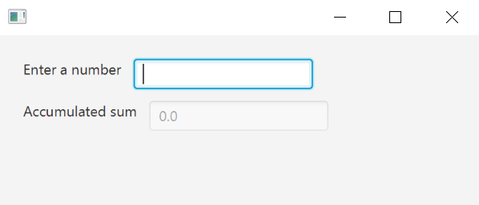
- Legyen VBox a root elemem!
- Ezen belül legyenek HBox-ok!
- A fentiekre állítsak be valamilyen spacing-et, illetve a VBox-hoz paddinget is!
- Két label és két TextField legyen a felületen!
- Az első TextField-be számokat írhatok és amennyiben megnyomom az entert, akkor a sum TextField aktuális értékéhez adjam hozzá az első TextField értékét!
- a sum TextField értéke 0-ról indul és nem szerkeszthető!
- Figyelj a hibakezelésre is! Ha nem számot írnak be akkor nem kell hozzáadni semmit sem a sumhoz!
Megoldás
1 2 3 4 5 6 7 8 9 10 11 12 13 14 15 16 17 18 19 20 21 22 23 24 25 26 27 28 29 30 31 32 33 34 35 36 37 38 39 40 41 42 43 44 45 46 47 48 49 50 51 52 53 54 55 56 57 58 59 60 61 62 63 64 65 66 67 68 69 70 71 72 73 74 75 | |
Daily Challange¶
Feladat
A Chaos Game során egy háromszög (legyen szabályos) csúcspontjai adottak (A, B, C).
A 3 csúcs mellett választunk egy véletlenszerű pontot a síkon (D).
Ezután egy iteratív algoritmust futtatunk, melynek minden lépésében véletlenszerűen választunk egy csúcsot, majd a választott csúcs és a D pont által alkotott szakasz felezőpontját választjuk új D pontnak és ki is rajzoljuk.
Ezt az iterációt a végtelenségig folytathatjuk.
Amennyiben jól dolgoztunk, akkor megkapjuk a Sierpinszky-háromszöget.
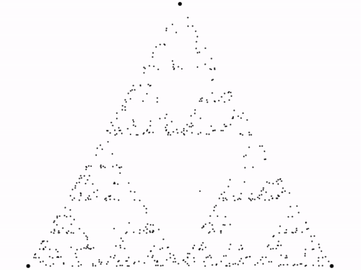
A feladat során jól jöhetnek a következő JavaFX osztályok:
Point2D: két dimenziós pontCircle: Körök kirajzolásához használhatóTimeline: Animáció alkalmazásához
Az implementáció során általánosíthatjuk a megvalósítást tetszőleges szabályos sokszögre, illetve akkor is más rajzolatokat kapunk, ha egymás után kétszer nem választhatjuk ugyanazt a csúcsot.
Megoldás
1 2 3 4 5 6 7 8 9 10 11 12 13 14 15 16 17 18 19 20 21 22 23 24 25 26 27 28 29 30 31 32 33 34 35 36 37 38 39 40 41 42 43 44 45 46 47 48 49 50 51 52 53 54 55 56 57 58 59 60 61 62 63 64 65 66 67 68 69 70 71 72 73 74 75 76 77 78 79 80 81 82 83 84 85 86 87 88 89 90 91 92 93 94 95 96 97 98 99 100 101 102 103 104 105 106 107 108 109 110 111 112 113 114 115 116 117 118 | |